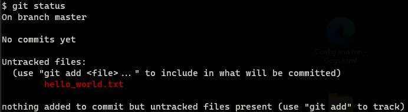
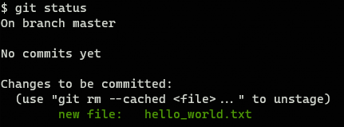
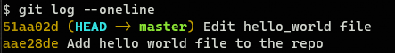
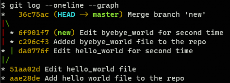
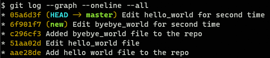

Git Primer§
Git is a version control system, which means it is intended to be used to manage different file versions. You can think about Git as a supervisor that is reading the changes that you are doing in files inside a Git repository.
There are tons of “in-depth” Git tutorials on the Internet, so here I have just collected the most basic commands and concepts that you need to know to use Git.
Note
For more technical explanations of the concepts presented here the References should be of great help
Finally, all the commands represented in this document are examples, they are not supposed to be executed anywhere, but they should work as far as you are using Git Bash from Git for Windows if you are using Windows, and Git installed if you are using Linux or MacOS.
Gitpedia§
There are many concepts that are broadly used when you are working with Git but also might be new if you have never worked with it before:
- Repo(sitory)
This is the key concept and sadly it is also ambiguous. A repository is a directory (a folder for Windows users), in which changes are being tracked using Git. This is also called the root directory. This directory must have a
.gitdirectory inside, and there is where Git is tracking all the changes. Strictly talking the.gitdirectory is the repository, and the rest of the contents of the root directory are the worktree, but everyone uses “repo” to refer to the root directory.- Worktree
It is a specific version of the root directory. When Git tracks the root directory, a specific status of the directory can be saved. Each of these saved status has specific worktree.
- Commit
It refers both to the action of save a specific worktree and to the worktree itself. So, once you have committed your changes you can check the worktree associated to that specific commit. Normally, after doing some modifications in the root directory you want to save the current status so you commit a set of changes, Git then stores them.
- Branch
A Git repository is a tree structure. You start having just one branch (the trunk) but then you can create multiple deviations from it. So when you decide to, from a specific commit, start evolving the repository in a different way, you are creating a ramification of the
maindevelopment path, that is a branch.- Remote
Git repositories can be replicated. You can tell Git that this repository in your machine should be aware of changes in that replica of the repository in that other machine (or also in your machine). Each of those connected repositories is called remote. Only changes that have been commited can be shared across replicas.
- Push
Refers to the action of storing changes of your repository in a replica(ted) repository.
- Pull
Refers to the action of storing changes of a replica(ted) repository in your repository.
- Clone
Refers to the action of creating a repository in your machine that replicates a remote repository and normally check a specific worktree.
Git by yourself§
Git is a great tool for developers to collaborate, but it is not just mean for that. You can use Git to have a much clearer understanding on how your projects evolve.
Lets assume you (as “Developer A”) start working on a project called “my_project” so you create a directory called my_project in your computer, located at ~/repos/my_project (%USERPROFILE%\repos\my_project in Windows). If you want to initialize a Git repository here you just have to:
cd ~/repos/my_project
git init
Then you must see how Git has created the repository folder .git inside ~/repos/my_project.
Adding changes§
Now you create a file called ~/repos/my_project/hello_world.txt and write something on it. You can check how Git see those changes by calling:
git status
The output would be similar to this one:
Git knows that you have added a new file, but it is saying that it is not tracking it. To tell Git to track the file you have to execute:
git add ./hello_world.txt
git status
The output would be similar to this one:
Git is telling you that ./hello_world.txt file has changed but the changes are not registered, so if you add additional changes to this file, you want be able to recover this specific status using Git. To register the changes execute:
git commit -m "Add hello world file to the repo" ./hello_world.txt
git status
When you commit your changes it is good practice to add an expressive message, explaining why are you registering these changes. Writing good messages is an indicator of your quality as a developer, a lot of teams impose specific format for commit messages.
The output would be similar to this one:

Git is telling you that all the changes of the repo are registered, so everything is fine.
Now lets assume that you keep modifying the hello_world.txt, then git status will show something like this:
Telling you that there are new changes in hello_world.txt and offering you to:
git add: Add these changes to the stage, so they will be part of the next commit.git restore: Discard these changes and put the file back to the previous (committed) status.
Lets assume you think changes are fine and commit them, now you have 2 commits. You can see them by executing
git log --oneline
The output would be similar to this one:
Here you have a lot of information (and much more information can be displayed). First thing on each line is the commit-hash, it is how Git makes reference to each particular status of the repository. For Git your repository is just a tree of commits, and you can navigate them smoothly using these hashes. The information between parenthesis is telling you that the current HEAD (it is the worktree you are watching) is pointing to branch master.
Branching§
Now imagine this is a working version and you want to evolve it but do not want to mess with it. Then you have to create a branch and work on it. Execute:
git branch new
git checkout new
You are now in a new branch (you can have the same result by executing git checkout -b new). For now both branches master and new are identical, lets add a new file called byebye_world.rst to this branch and commit the changes.
And to make life more interesting we are going to modify one more time byebye_world.txt in new branch and hello_world.txt in branch master, so our branches have evolved differently. After doing so we can execute:
git log --all --graph --oneline
The output would be similar to this one:

The situation now is quite complicated, there are 2 branches, bifurcation has happened at commit 51aa02d, but each one has evolved differently. If new branch is useless we can delete it (git branch -d new) and keep going with our life, but if not…
Reconciling§
This is the most annoying part of using Git, but if you become good at this, you are going to have much more love in your life.
When there are separate worktrees, in our case master and new, that we want to reconcile (assume we want to put changes of new into master) we can follow 2 approaches:
Merging§
The history of new worktree is squashed and a new commit in the other master worktree is created incorporating all the changes from new. Lets do it. Just be sure that you have master checked out, and execute:
git merge new
git log --graph --oneline
The output would be similar to this one:
Now we also have file byebye_world.txt in master branch with all the changes.
Warning
Merge commits are something developers tend to dislike because they are not really expressive. If you use this reconciling strategy you might want to change the message.
Rebasing§
The history of new worktree is moved into master worktree. This is the preferred way because, the source worktree is integrated into target worktree history, so results are clearer. Just execute:
git rebase new
git log --graph --oneline --all
The output would be similar to this one:
The result is the same much the log result is much obvious now.
Note
Rebasing is the usual procedure to alter branch history. You can use it for other purposes than reconciling branches, but with great power… Be careful.
To configure rebase as reconcile default reconcile strategy you need to run:
git config --global pull.rebase true
Conflicts§
Normally, when you reconcile 2 worktrees there is going to be conflicts (files that are changed in both worktrees and Git do not know how to combine those changes). When that happens you have to manually edit the file to define a working version that takes the best from both worktrees. Sometimes this can be tedious and error prone and it is the main reason why developers are afraid of reconciling. There are a lot of literature about how to avoid conflicts (most popular is atomic commits) but the best is that you are prepared for them because they are going to happen. Just take advantage of your editor capabilities and make some tea. It is not going to be as traumatic as you are guessing.
Git with others§
Now that “Developer A” knows how to maintain and work with git repositories it is time to learn how to share your work and collaborate with others.
Pushing§
Lets assume that you (Developer A) want to publish your repository ~/repos/my_project to https://gitserver.com/repos/my_project . Just be sure that you have master checked out, and execute:
git remote add origin https://gitserver.com/repos/my_project
git push --set-upstream origin master
Here you are doing 2 things:
Defining a
remote, namedorigin, that corresponds to the URLhttps://gitserver.com/repos/my_projectPushing (or publishing) your changes to
originremote.
Be aware that your repositories can have more than one remote, the one named origin is the one used when you used no arguments (depends on Git configuration).
Now you can connect to the server and see how there is an exact replica of the repository in your local machine.
Cloning§
Lets assume that you (Developer B) want to make some changes in https://sharepoint/repos/my_project. Lets assume that ~/repos also exists in your machine. Then you have to execute:
git clone https://sharepoint/repos/my_project ~/repos/my_project
cd ~/repos/my_project
This way you have a directory ~/repos/my_project that is a replica of the last version published by Developer A in https://sharepoint/repos/my_project. You can now start working as defined in section Git by yourself.
Once your changes are ready to be shared with Developer A, you just have to commit them and push (as Developer A did in Pushing).
Pulling§
If the worktree published in https://sharepoint/repos/my_project changed before you push, you would have to reconcile remote version with your local one before pushing. To do that, you just execute:
git pull origin
When you pull from a remote, Git will try to reconcile remote and local worktrees using the strategy defined in your config, so it is highly recommended to set up rebase (as explained in Rebasing).
References§
Git: Homepage.
Learn Bitbucket with Git: Company oriented but has great cover of the basics.
What is version control: For beginners, you can just start here and advance through the whole tutorial.